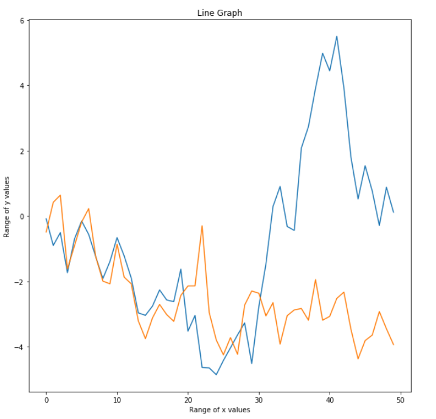
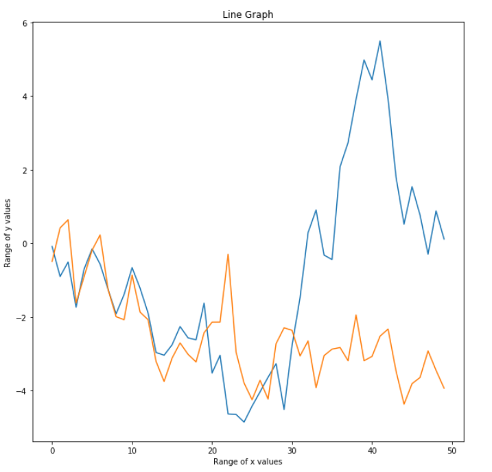

Line Graph
You can see below a typical example of a Line Graph. In this graph, there are two lines present.
Which describes your situation best?
You can see below a typical example of a Line Graph. In this graph, there are two lines present.
Which describes your situation best?